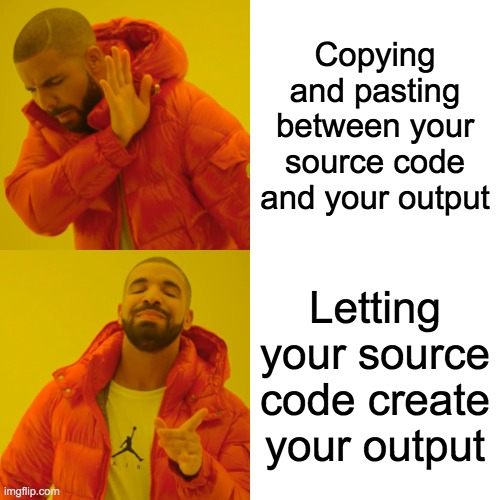
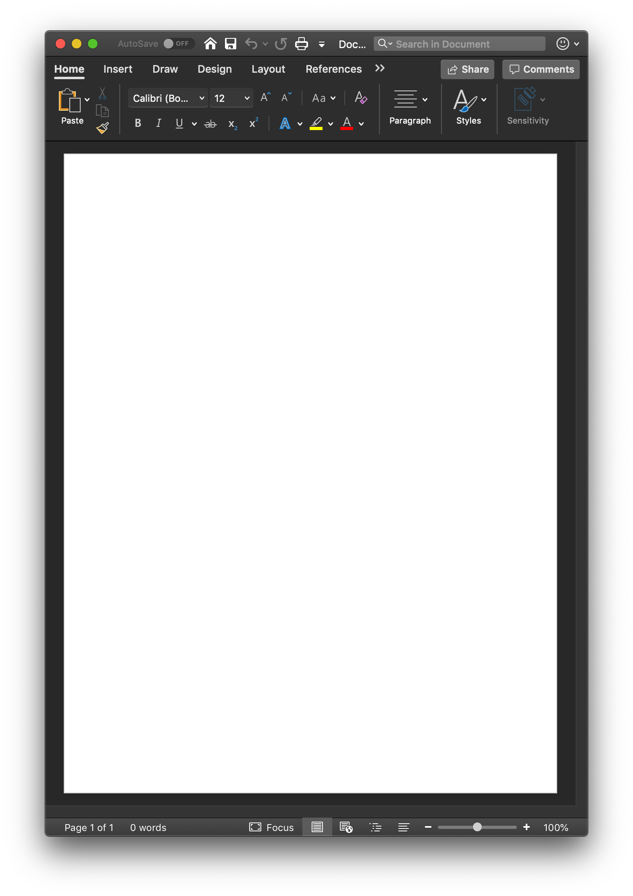
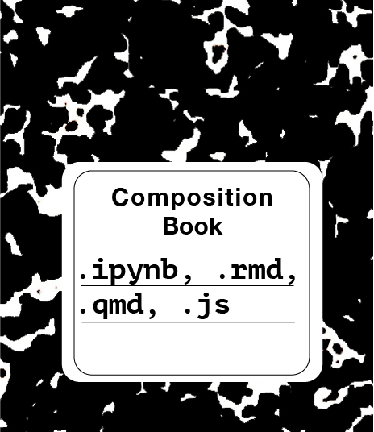
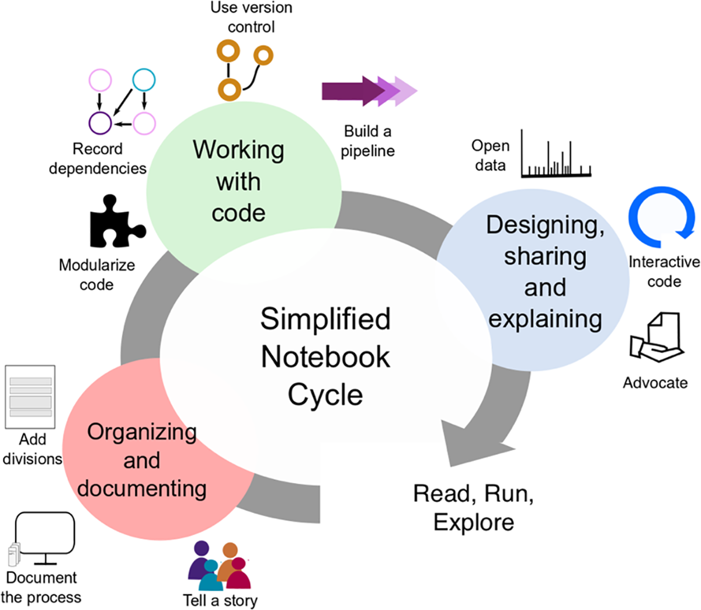

Introduction to Notebooks for Research Computing
Fall 2022 Literate Programming Workshops
I am a health scientist and NOT a computer scientist!
I am very much still learning so please ask me questions!
ask about notebook experiences before starting…why here?
Why use a notebook?
For communicating with focus on conclusions, not code.
For collaborating with other scientists (including future you!)
As a lab notebook where you capture what you did and what you were thinking.
Why use a notebook?

How does it work?

Change your mental model

Change your mental model


Demos
Jupyter + JupyterLab
open terminal
jupyter notebook
Lingo
Authoring framework: how you write code + text (Jupyter, Quarto, Observable)
Language engine & markdown flavor: what you write
File format: what you save
Local editor: where you write locally 💻 (source + UI)
Platform editor: where the magic happens ☁️ (sharing + UI)
Demos
Quarto + VSCode
Demos
R Markdown + RStudio
Demos
Observable + ObservableHQ
Ten simple rules …
Writing and sharing computational analyses in Jupyter Notebooks

Simply making notebooks doesn’t make our work reproducible.
Rule 1: Tell a story for an audience
Rule 2: Document the process, not just the results
Rule 3: Use cell divisions to make steps clear
Rule 8: Share and explain your data